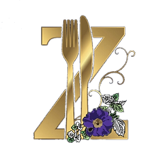

| Starters (All served with roll and butter) | Mains | Deserts |
|---|---|---|
| Soup | Beef in red win sauce | Apple crumble and custard |
| Brocoli and stilton | Chicken and leek pie | Apple pie and custard |
| Carrot and coriander | Chicken curry | Cheesecake |
| Chunky vegetable | Chicken leg and thigh quarter, roasted with garlic and herbs | Eton mess |
| Cream of Mushroom | Chilli con carne | Fruit salad with cream |
| Leek and potato | Creamy chicken supreme | Ice cream |
| Spicy tomato and basil | Honey mustard chicken breast | Rice pudding with jam |
| Lasagna with garlic bread | Syrup sponge and custard | |
| Other | Mushroom stroganoff | Warm chocolate brownies with cream |
| Three cheese, Mac and cheese with spinach | Pork chops | |
| Bruschetta with tomato and mozzarella | Roast beef with horseradish and Yorkshire pudding | Cheese Board wih Tea/Coffee |
| Buffalo chicken wings | Roast pork with apple sauce and crackling | Selection of 3 cheeses and grapes, with crackers &butter |
| Greek salad with olives and feta | Sausages with onion gravy |  |
| Houmous and pitta bread with cucumber | Spaghetti carbonara | |
| Pate (smooth or course) with toast | Steak and ale pie with lashings of gravy | |
| Prawn cocktail | Tomato and mozzarella pasta bake with chorizo | |
| Smoked mackerel salad | Fillet of salmon with tartare sauce (£2 extra per person) | |
| Lamb shank ( £2 extra per person) | ||
| Vegetarian options available if ordered in advance | ||
| Carbohydrate options | ||
| Garlic bread | ||
| Potato Dauphinois | ||
| Potato wedges | ||
| Roast, mashed or boiled potatoes | ||
| Seasoned rice | ||
| . | ||
| Seasonal vegetables available throughout the year |
When you are send out the summons please can you stress to your members and guests that they need to let YOU know if they have any
allergies or special requirements. Being a small centre we have little or no food stored on site, so informing Zoe on the night is of no use.
Members should not contact Zoe directly, to avoid confusion she will only work with the Secretary.
The cost of the four-course meal is £22, this includes complimentary Tea/Coffee and biscuits before the meeting.
However, if you drop either the Starter or Dessert the cost will be reduced to £21.
The minimum dining number is 12, please ALWAYS contact Zoe to discuss options if you have low numbers.
The choice of menu and estimated number of diners is required six (6) days prior to the meeting.
The final number of diners and special dietary requirements is required a minimum of 48hrs before the meeting.